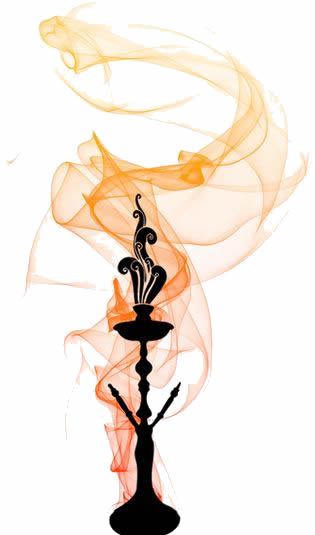

|  | História do Narguilé As origens do narguilé são um tanto confusas, mas o mais provável, ou pelo menos a
versão mais aceita, é de que ele tenha se originado na região da fronteira entre a Índia e o Paquistão.
O narguilé, quando surgido nesta região, era rústico e bastante simples, feito de madeira e coco.
Segundo esta versão, o narguilé foi inventado no século XVII na Índia, por um médico chamado Hakim
Abul Fath, com a finalidade de se filtrar as impurezas provenientes da fumaça.
|
Melhores essencias do mercado atualmente
MARCIO FELIPE